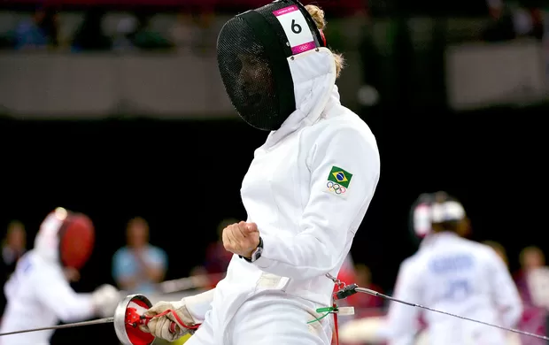
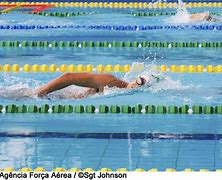
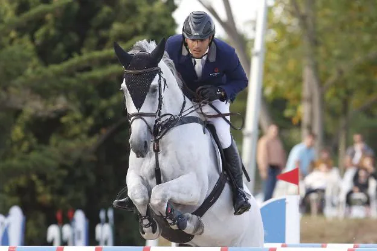
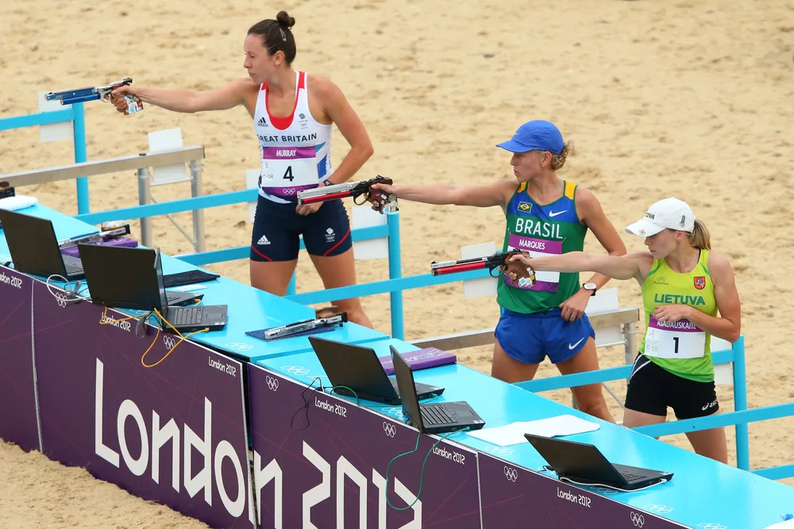

Como funciona?
O pentatlo moderno é realizado em um único dia, com as cinco modalidades acontecendo em rápida sucessão. Os atletas começam com esgrima, depois passam para a natação, seguido pelo hipismo, e finalizam com o laser-run, que combina corrida e tiro. A pontuação acumulada nas quatro primeiras modalidades determina a ordem de partida no laser-run, com o atleta que tiver a maior pontuação iniciando primeiro. O primeiro a cruzar a linha de chegada no laser-run vence a competição.
1. Esgrima
- Esporte: A esgrima no pentatlo moderno utiliza o florete. Os competidores duelam entre si em combates de um toque, onde o primeiro a acertar o oponente vence a luta.
- Combate: Cada duelo tem a duração máxima de 1 minuto. Se nenhum atleta tocar o outro dentro desse tempo, ambos são considerados derrotados. Todos os atletas se enfrentam, e cada vitória contribui em 1 ponto para a pontuação total.
- Pontos Extras: Existe uma fase de "bonus round" onde os atletas têm a oportunidade de ganhar pontos extras ao enfrentar os próximos adversários em um formato de eliminação.
- Treinamento: Treinamento de esgrima exige agilidade, reflexos rápidos e precisão. Os atletas passam horas aperfeiçoando a técnica, trabalhando na velocidade de reação e na estratégia para antecipar os movimentos do oponente.

2. Natação
- Esporte: No pentatlo moderno, a prova de natação é uma corrida de 200 metros em estilo livre. O tempo de conclusão da prova é convertido em pontos.
- Pontuação: Os tempos são convertidos em pontos da seguinte maneira: Um tempo base de 2:30 minutos corresponde a 250 pontos. Para cada segundo abaixo ou acima desse tempo, o atleta ganha ou perde pontos, respectivamente.
- Treinamento: A natação requer força, resistência e técnica. Os pentatletas treinam tanto a técnica de nado quanto a resistência para manter um alto desempenho durante os 200 metros. O treino inclui séries de velocidade e resistência, bem como trabalhos de técnica

3. Hipismo
- Esporte: Os atletas devem completar um percurso de salto com obstáculos montando cavalos que são sorteados pouco antes da competição, tendo apenas 20 minutos e 5 saltos de familiarização. A habilidade está em adaptar-se rapidamente a um cavalo desconhecido.
- Percurso: O percurso geralmente inclui 12 obstáculos (de 350 a 450 metros de comprimento).
- Pontuação: Cada erro (derrubar um obstáculo, refusar, ou queda) resulta em penalidades de tempo e pontos. O objetivo é completar o percurso sem faltas no menor tempo possível.
- Treinamento: O treinamento envolve não apenas a prática dos saltos, mas também a habilidade de compreender e se adaptar a diferentes cavalos. Isso inclui desenvolver um relacionamento com o cavalo em pouco tempo e a habilidade de controle e liderança durante o percurso.

4. Tiro Esportivo (Laser Run)
- Esporte: Tradicionalmente, o tiro era uma prova separada, mas agora é combinado com a corrida no laser-run. Os atletas devem acertar cinco alvos antes de continuar a correr. Cada alvo está a uma distância de 10 metros.
- Pontuação: O tempo necessário para acertar os 5 alvos afeta a pontuação da corrida.
- Regras: Os atletas têm um tempo máximo de 50 segundos para acertar 5 tiros. Se não conseguirem dentro desse tempo, devem iniciar a corrida.
- Treinamento: O tiro requer concentração extrema, precisão e controle da respiração. O treino foca em disparos repetidos para melhorar a precisão e a habilidade de manter a calma sob pressão, especialmente após o esforço físico da corrida

5. Corrida (Laser Run)
- Esporte: A corrida é combinada com o tiro no laser-run, onde os atletas correm 800 metros, atiram em cinco alvos, e repetem o ciclo quatro vezes, sendo 3200 metros no total. A corrida e os tiros são intercalados.
- Formato: Inicia-se com uma ordem de largada que é determinada pela soma dos pontos nas outras disciplinas. A prova segue o formato "handicap", onde o líder começa primeiro e os outros competidores seguem com intervalos baseados nos pontos acumulados.
- Objetivo: O primeiro atleta a cruzar a linha de chegada vence o pentatlo.
- Treinamento: O treinamento envolve resistência, velocidade e a capacidade de controlar a respiração entre os tiros. Os pentatletas treinam corrida de longa e curta distância, além de simulações de corrida e tiro para melhorar a transição entre as duas atividades.